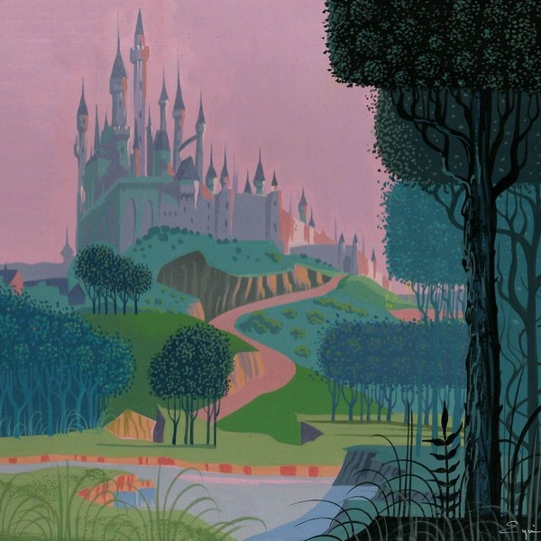
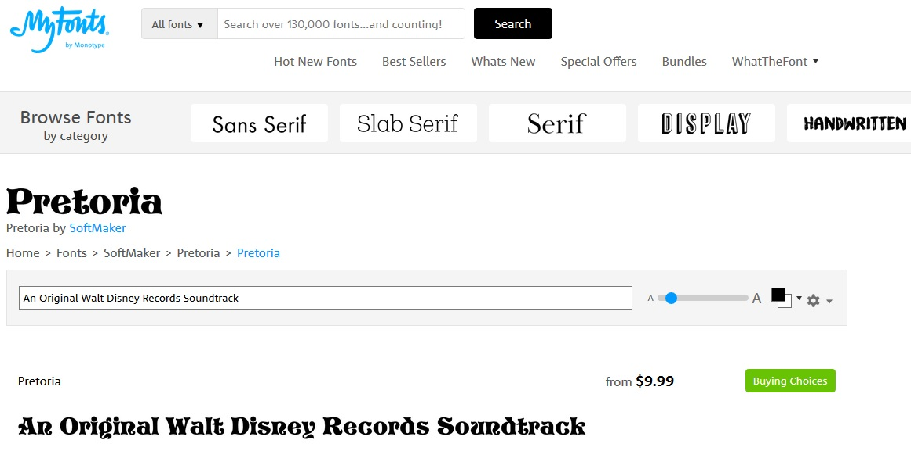
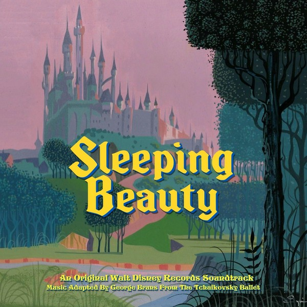

Sleeping Beauty
Source Image
For Sleeping Beauty my first step was finding an image that colorfully evoked Disney artist Eyvind Earle, whose style the film's art direction was based on. This was challenging because his concept art quite often used drab colors but I finally found one that looked brighter, which I feel is a little better for an album cover.
Logo Recreation
Finding a clean logo accurate to the film's original promotional materials was also challenging due to various reimaginings over the years, but I finally located one I could use to transform into a vector image, allowing me to choose text colors and create transparent backgrounds. The samples below show a black background (for viewing purposes) and my color choices for two versions I could stack for depth on the final image.
Choosing a Font
Adding credits required finding a font appropriate to the logo's style and presence. Using MyFonts.com I was able to locate one called "Pretoria" that seemed about right.
Final Image
Stacking my two logos and adding credits in artisticlly-pleasing locations creates the final image. Click the image to enlarge it.
{kind=link}